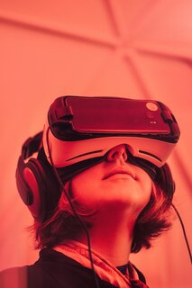
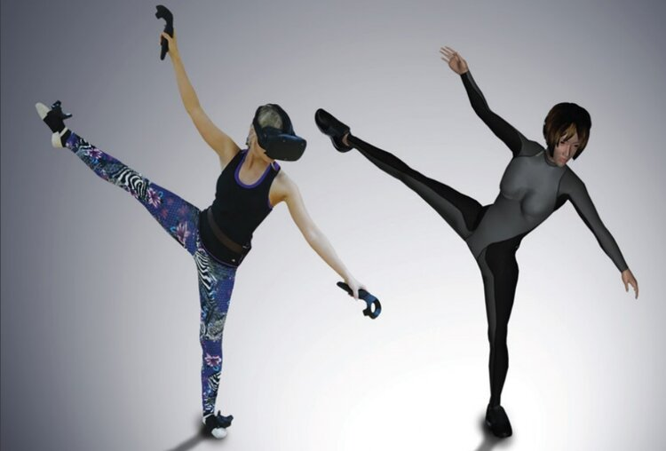

Virtual Reality
Virtual Reality has been around for a while now but is still in its early adoption stage. Virtual Reality allows a user to escape reality into a world of fantasy which can include flying dragons or something as simple as a quiet cafe. Recently I have been consumed by Virtual Reality and all of the things it offers like long-distance friendships, the ability to dance with a person on the opposite side of the world, and the ability to create opportunities.
On my free time I enjoy to hop into virtual reality and dance alongside my fellow friends in the international dance association. This IDA, international dance association is only possible because of Virtual Reality in which our friends in Korea, New York and California can all come together and have a dance cypher and compete. Virtual Reality allows users to not only be immersed sight wise into VR but also through body movements. Trackers are a new development which allows a user to track their body movements inside of VR.
Dance and Music
I enjoy to dance and listen to music within Virtual Reality as well as in real life. Dancing allows me to release tension and express myself. Music is a part of my everyday life from music to wind down before bed to music to keep a positive atmosphere when waking up.
I like to learn new dance moves within shuffling and listen to electronic dance music. Music and dance allow me to keep a positive mindset through everyday tasks and life.
Being able to express feelings through dance is an amazing feeling that allows a person to embrace their emotions. It is a great way to release tension and stress and has been a lifesaver in my day to day life. Any feeling of negative emotion can be taken away by music and dance for myself. I have been dancing since a child starting with spanish folk songs to electronic music now as an adult. Over the years I have learned different types of dance types including:
- Shuffling
- Bachata
- Hip Hop
- Contemporary
- Salsa
- Mambo
- Samba